CU BOULDER / ENGINEERING STUDENT
Ian
Finlayson.
Focused on robotics.
Driven to build.
I’m pursuing a mechanical engineering major and an electrical engineering minor at CU Boulder, with the goal of earning a master’s in robotics. I enjoy turning an idea into a mechanism, wiring it up, and finding out what needs to change.
Open to internships and research opportunities in robotics and engineering.
Explore my work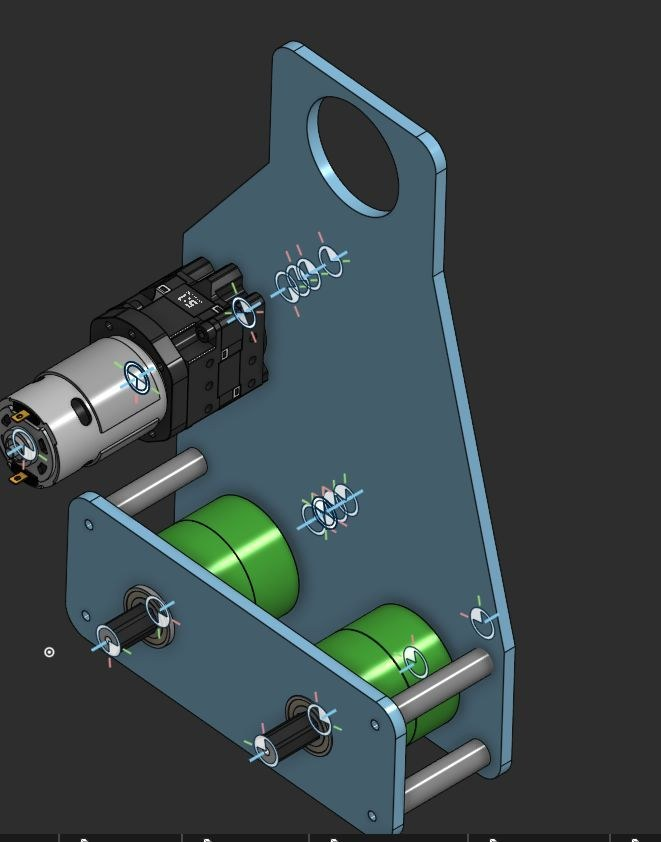
ABOUT ME
Building toward
robotics.
Robotics is what drew me to engineering. In high school, joining FIRST Robotics Competition Team 5199 showed me how much I enjoyed designing, building, and refining machines.
That curiosity still shapes how I learn. I read theoretical physics books by Brian Greene and explore questions about the origins of the universe. In high school, I served as secretary of the Theoretical Physics Club, helping lead discussions on general relativity and the concepts behind string theory.
Today, I’m building on that foundation at CU Boulder through hands-on coursework and the racing team’s powertrain group. I’m interested in the way mechanical design, electronics, and code come together in a working system.
Outside engineering, high-school cross country, track, and clarinet taught me patience, consistent practice, and how to work with a team.
CURRENT SKILLS & TOOLS
What I work with
FUTURE LEARNING
Next tools to explore
Planned additions, not current proficiency.
SELECTED EXPERIENCE
Projects & teams
Individual builds, collaborative projects, and the teams that shaped how I work.
CU BOULDER / GEEN 1400 / TEAM APEX
Heated Cat Carrier
A warm, sunny spot for every vet trip.
I led the circuit build and wrote the microcontroller code for a temperature-controlled carrier prototype. The final iteration paired an ESP-32D with a heating pad, LCD, and teammate-developed Bluetooth app.
- My role
- Circuit build lead; embedded programming
- Engineering focus
- Dual-voltage wiring, switching, thermal control
- Recorded trials
- 105°F reached in 10:00 and 8:54 from different starting temperatures
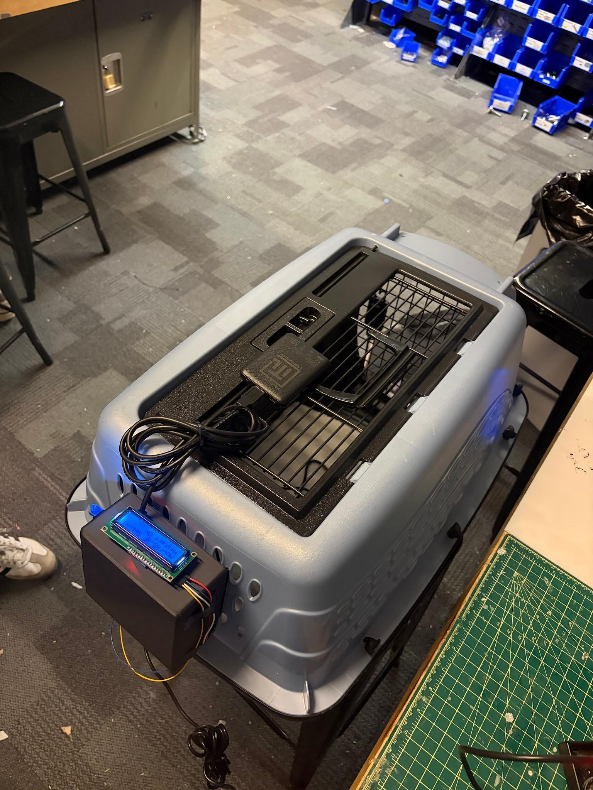
CURRENT TEAM / CU BOULDER
CU Boulder
Racing Team
I’m a member of the powertrain group on the CU Boulder Racing Team.
My work here is just getting started.
Visit the team websiteHIGH SCHOOL / TEAM EXPERIENCE
FRC Team 5199
The Robot Dolphins From Outer Space
I was a varsity member of Team 5199 and completed three years of robotics classes. The team’s workshop was where I developed practical skills in Onshape, polycarbonate fabrication, 3D printing, soldering, crimping, and wiring.
I helped troubleshoot electrical and mechanical issues in the competition pit and learned to make repairs under time pressure. Working across disciplines also taught me that a mechanism needs to be buildable, wireable, and practical for programmers to control.
The competition robots were large team efforts. I contributed as a team member; I did not design or build those robots alone.
Visit Team 5199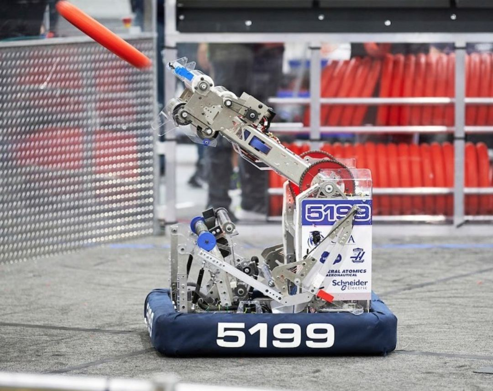
Upkeep on the T-shirt cannon
I also helped upgrade and repair the team’s existing pneumatic T-shirt cannon for football-game demonstrations. My work was maintenance and improvement of an established machine.
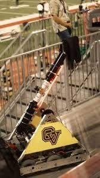
HIGH SCHOOL / INDIVIDUAL TRAINING BUILD
“Hamburger Style”
PVC pole climber
One week to design, CAD, and build.
For an off-season Team 5199 training challenge, I designed and built a robot to climb a 5-foot PVC pole. The robot had to stay under 10 inches tall, and the pole’s outside diameter was 1.902 inches.
I handled the mechanical design, CAD, and build myself, with electrical help from my friend Wyatt Dalby. The mechanism used compliant wheels, a 775pro motor, and belt-driven pulleys.
Early layouts placed the motor too low. Moving it toward the center helped with packaging, but I then had to provide clearance around the pole. Iterating between sketches, CAD, and the physical build made those tradeoffs concrete.
What I learnedPackaging, balance, and wiring have to be considered together. A compact CAD assembly still needs to be practical to assemble and test.
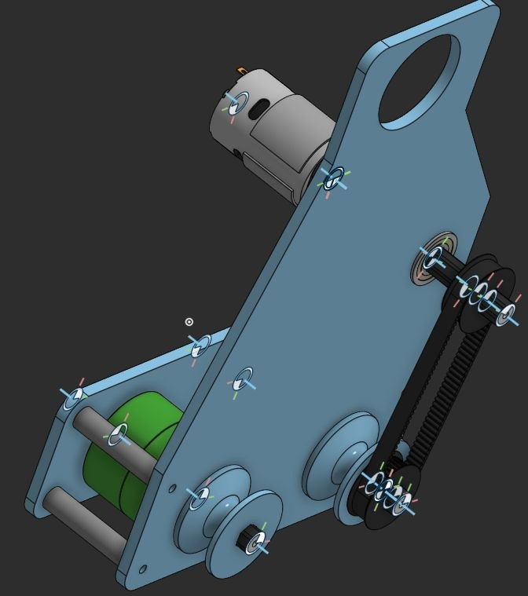
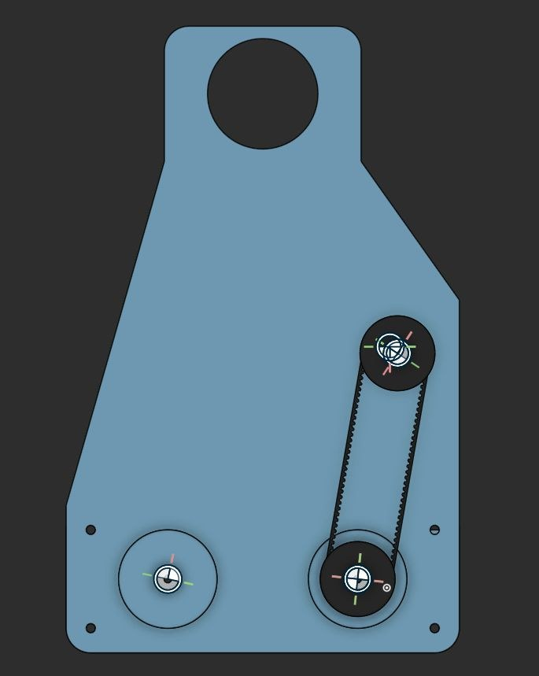
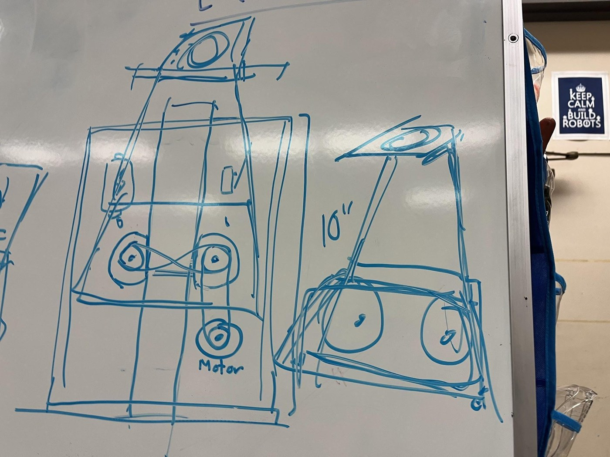
HIGH SCHOOL / COLLABORATIVE BUILD
Quadcopter build
Mechanical assembly, soldering, and fault finding.
I built a drone with four friends. I worked with two teammates on the frame assembly and electrical connections, while another teammate focused on the controller and sourcing parts.
Connecting the frame, propellers, and brushless motors was straightforward compared with the wiring. Soldering the controller connections and resolving a battery-connector mismatch took more iteration than we expected.
After a crash, uneven operation led us back through the electrical connections. I found a damaged capacitor lead during inspection. That experience reinforced the value of checking small connections rather than assuming the largest visible damage explains every fault.
What I learnedInspect, isolate, and test before choosing the next repair.
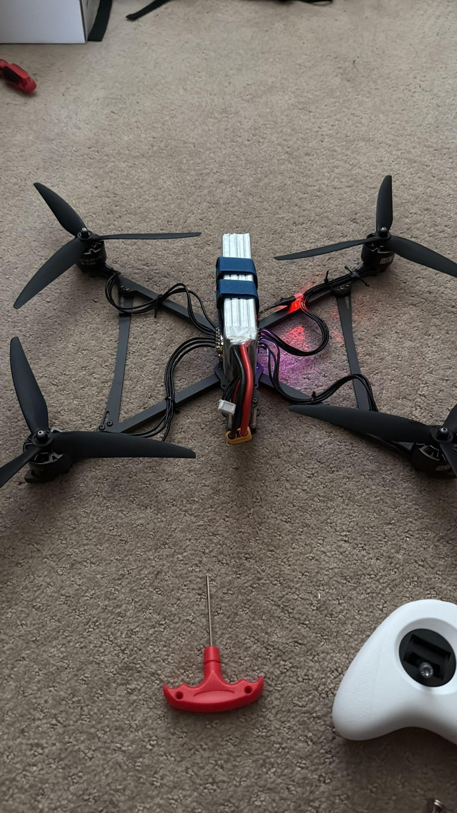
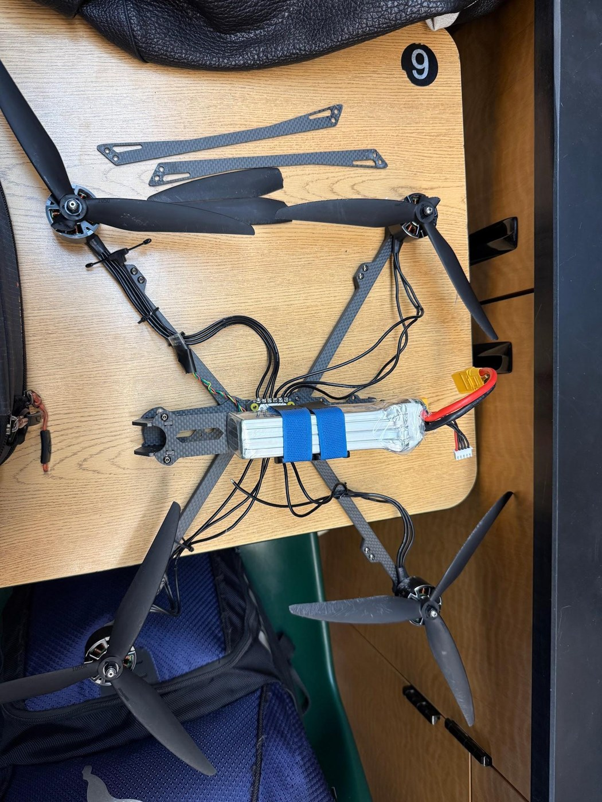
HIGH SCHOOL / COLLABORATIVE BUILD
Golf-ball launcher
A simple mechanism with adjustable launch angle.
I worked with three friends on a spring-driven golf-ball launcher. We chose a sliding-rod mechanism because it gave us a straightforward way to control the launch, and a radial, protractor-style support let us adjust the angle.
Getting clean cuts in the wood and PVC was more difficult than expected. Sanding the sliding surfaces reduced friction and made the mechanism move more freely.
What I learnedFinish quality and alignment can determine whether a simple mechanism works smoothly.
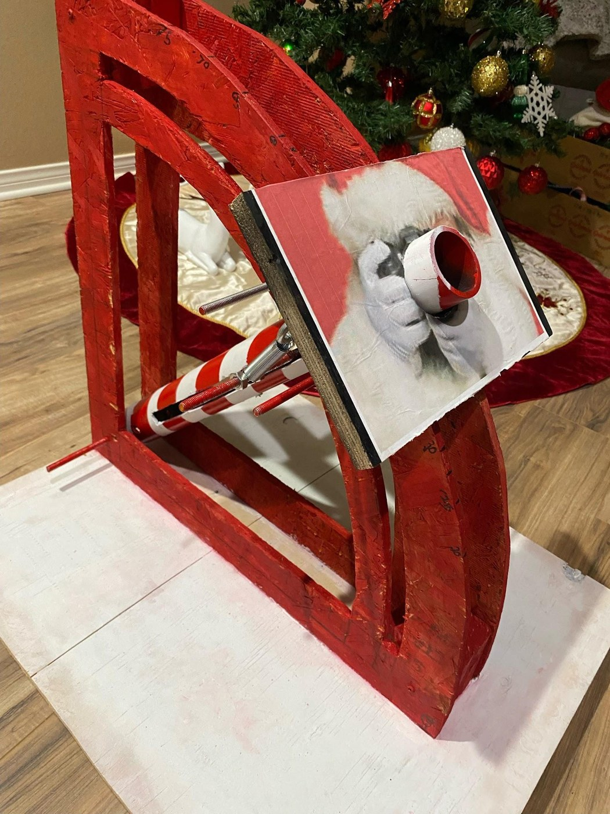
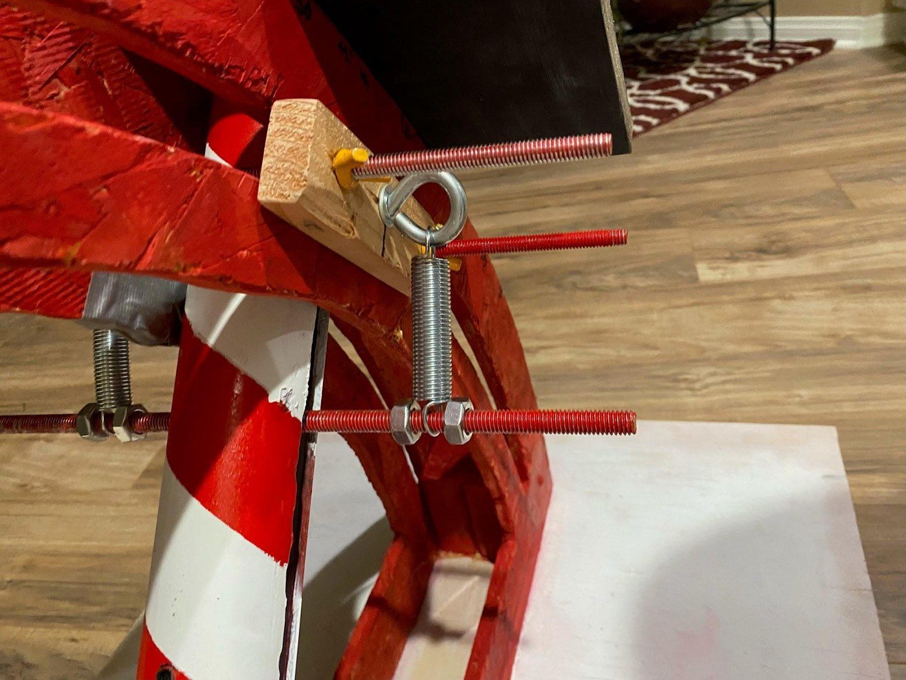
HIGH-SCHOOL OUTREACH & PERSPECTIVE
Making engineering
feel accessible.
Through Team 5199 and Science Heads, I helped bring robot demonstrations and hands-on STEM activities to schools and libraries. I also represented my district’s Career Technical Education program and volunteered as an SAT tutor through Schoolhouse.
Those experiences taught me to explain ideas clearly, meet people where they are, and make room for questions. I want to carry that same approach into the teams I work with.